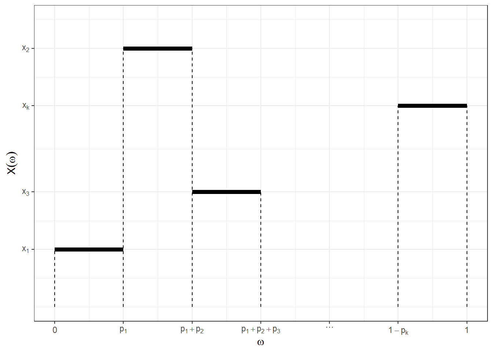

6 Apendice: Breve Resumo de Medida e Probabilidade
6.1 Breve Resumo de Medida e Probabilidade
\(\Omega\): espaço amostral (um conjunto não vazio).
\(\mathcal{A}\): \(\sigma\)-álgebra de subconjuntos de \(\Omega\), isto é,
- \(\Omega \in \mathcal{A}\);
- \(A \in \mathcal{A} \Longrightarrow A^{c} \in \mathcal{A}\);
- \(\displaystyle A_1, A_2, \ldots \in \mathcal{A} \Longrightarrow \bigcup_{i\geq1} A_i \in \mathcal{A}\).
Os elementos de \(\mathcal{A}\) são chamados de eventos e serão denotados por \(A, B, C, \ldots, A_1, A_2, \ldots\)
\((\Omega, \mathcal{A})\): espaço mensurável.
Usualmente, denota-se a \(\sigma\)-álgebra gerada por um conjunto \(\mathcal{C}\) como \(\sigma(\mathcal{C})\). Por exemplo:
- \(\sigma(\Omega) = \{\emptyset,\Omega\}~~\) (\(\sigma\)-ágebra trivial);
- Para \(A \subset \Omega\), \(\sigma(A) = \{\emptyset, A, A^c, \Omega\}\);
- \(\sigma(\mathbb{N}) = \mathcal{P}(\mathbb{N})~~\) (partes de \(\mathbb{N}\), todos o subconjuntos de \(\mathbb{N}\));
- \(\sigma\left(\left\{(-\infty,x): x \in \mathbb{R}\right\}\right) = \mathcal{B}\left(\mathbb{R}\right)~~\) (borelianos de \(\mathbb{R}\))
\(~\)
- \(\mu: \mathcal{A} \longrightarrow \bar{\mathbb{R}}_+\) é uma medida se
- \(\mu(\emptyset) = 0\);
- \(\displaystyle A_1, A_2, \ldots \in \mathcal{A}\) com \(A_i \bigcap A_j = \emptyset\) , \(\forall i \neq j\) , \(\displaystyle \mu\left(\bigcup_{i \geq 1} A_i\right) = \sum_{i \geq 1} \mu\left(A_i\right)\).
- \((\Omega,\mathcal{A}, \mu)\) é chamado de espaço de medida.
\(~\)
Exemplo 1 (medida de contagem): Seja \(\Omega\) um conjunto não vazio e \(A\subseteq \Omega\). Defina \(\mu(A)=|A|\) como o número de elementos (cardinalidade) de \(A\). Assim, \(\mu(\Omega) > 0\), \(\mu(\emptyset)=0\) e, se \((A_n)_{n \geq 1}\) é uma sequência de eventos disjuntos, então \(\mu(\cup A_n) = \sum \mu(A_n)\). Note que \(\mu(A)=\infty\) é possivel se \(\Omega\) tem infinitos elementos.
\(~\)
Exemplo 2 (medida de Lebesgue): Seja \(\Omega=\mathbb{R}\) e \(A\subseteq \Omega\) um intervalo. Se \(A\) é limitado, defina \(\mu(A)\) como o comprimento do intervalo A. Se \(A\) não é limitado, \(\mu(A)=\infty\). Note que \(\mu(\mathbb{R})=\infty\), \(\mu(\emptyset)=0\) e, se \(A_1 \cap A_2 = \emptyset\) e \(A_1 \cup A_2\) é um intervalo (ou uma união de intervalos disjuntos), então \(\mu(A_1 \cup A_2) = \mu(A_1) + \mu(A_2)\).
\(~\)
Exemplo 3: Seja \(f: \mathbb{R} \longrightarrow \mathbb{R}_+\) uma função contínua e não nula. Para cada intervalo \(A\), defina \(\displaystyle \mu(A) = \int_A f(x) dx = \int_{\mathbb{R}} \mathbb{I}_A(x) f(x) dx\). Então, \(\mu(\mathbb{R})>0\), \(\mu(\emptyset)=0\) e, se \(A_1 \cap A_2 = \emptyset\) e \(A_1 \cup A_2\) é um intervalo (ou uma união de intervalos disjuntos), então \(\mu(A_1 \cup A_2) = \mu(A_1) + \mu(A_2)\).
\(~\)
Definição: Seja \((\Omega,\mathcal{A})\) um espaço mensurável e \(\mu_1\) e \(\mu_2\) medidas nesse espaço. Dizemos que \(\mu_2\) é absolutamente contínua com relação à \(\mu_1\) se, \(\forall A \in \mathcal{A}\), \(\mu_1(A)=0\) \(~\Rightarrow~ \mu_2(A)=0\).
Nesse caso, dizemos que \(\mu_2\) é dominada por \(\mu_1\) ou que \(\mu_1\) é uma medida dominante para \(\mu_2\) e denotamos \(\mu_2 \ll \mu_1\).
\(~\)
Teorema (de Radon-Nikodin): Seja \(\mu_2 \ll \mu_1\) com \(\mu_1\) \(\sigma\)-finita. Então, \(\exists f: \Omega \longrightarrow [0,+\infty]\) tal que, \(\forall A \in \mathcal{A}\), \[\mu_2(A) = \int_A f(x) d\mu_1(x).\] Além disso, se \(g:\Omega \longrightarrow \mathbb{R}\) é \(\mu_2\)-integrável, então \[\int g(x) d\mu_2(x) = \int g(x) f(x) d\mu_1(x).\] A função \(f=\frac{d\mu_2}{d\mu_1}\) é chamada de derivada de Radon-Nikodin da medida \(\mu_2\) com relação à medida \(\mu_1\) e é única \(\mu_1\)-q.c.
\(~\)
\(P: \mathcal{A} \longrightarrow [0,1]\) é uma medida de probabilidade se
- \(P(\Omega) = 1\);
- \(\displaystyle A_1, A_2, \ldots \in \mathcal{A}\) com \(A_i \bigcap A_j = \emptyset\) , \(\displaystyle P\left(\bigcup_{i \geq 1} A_i\right) = \sum_{i \geq 1} P\left(A_i\right)\).
\((\Omega, \mathcal{A}, P)\): espaço de probabilidade
Seja \((\Omega,\mathcal{A})\) e \((\mathfrak{X},\mathcal{F})\) dois espaços mensuráveis. Se \(X: \Omega \longrightarrow \mathfrak{X}\) é chamado de quantidade aleatória se uma função mensurável, isto é, se \(\forall B \in \mathcal{F}\), \(A = X^{-1}(B) \in \mathcal{A}\). Se \(\mathfrak{X} = \mathbb{R}\) e \(\mathcal{F}=\mathcal{B}\) (\(\sigma\)-álgebra de Borel), \(X\) é chamado variável aleatória.
A medida de probabilidade induzida por \(X\) recebe o nome de distribuição de \(X\): \[P_X(B) = P(\{\omega \in \Omega : X(\omega) \in B\})\]
Exemplo 1: Seja \(\Omega=\mathfrak{X}=\mathbb{R}\) com a \(\sigma\)-álgebra de Borel e \(f\) uma função não negativa tal que \(\int f(x) dx = 1\). Defina \(\displaystyle\mu(A)= \int_A f(x) dx\) e \(X(\omega)=\omega\). Então, \(X\) é uma variável aleatória contínua com função de densidade de probabilidade (f.d.p.) \(f\) e \(\mu_x = \mu\). Além disso, \(\mu_X\) é absolutamente contínua com relação à medida de Lebesgue \((\mu_X \ll \lambda)\) e \(\frac{d\mu_X}{d\lambda}=f\).
\(~\)
Exemplo 2: Seja \(\Omega=\mathbb{R}\) com a \(\sigma\)-álgebra de Borel, \(\mathfrak{X} = \{x_1,x_2,\ldots\}\) um conjunto enumerável. Seja \(f\) uma função não negativa definida em \(\mathfrak{X}\) tal que \(\displaystyle \sum_{i=1}^{\infty} f(x_1) = 1\). Defina \(\displaystyle \mu(A) = \sum_{\{i: x_i \in A\}} f(x_i)\). Então \(X\) é uma variável aleatória discreta com função de probabilidade (f.d.p.) \(f\) e \(\mu_X=\mu\). Além disso, \(\mu_X\) é absolutamente contínua com relação à medida de contagem \((\mu_X \ll \nu)\) e \(\frac{d\mu_X}{d\nu}=f\).
6.2 Valor Esperado de \(X\) (OU uma ideia da tal Integral de Lebesgue)
Por simplicidade, considere \(\Big(\Omega = [0,1]~,~~ \mathcal{A} = \mathcal{B}\left([0,1]\right)~,~~ P=\lambda\Big)\).
Considere uma variável aleatória discreta \(X: \Omega \longrightarrow \mathbb{R}\), assumindo valores em \(\mathfrak{X}=\{x_1,x_2,\ldots,x_k\}\) com probabilidades \(\{p_1,p_2,\ldots,p_k\}\) com \(x_i \geq 0, \forall i\). Já vimos que o valor esperado (ou esperança) de \(X\) é \(E[X] =\) \(\sum x_i P(X=x_i) =\) \(\sum x_i p_i\).
Podemos definir essa v.a. como
\(X(\omega) = \left\{\begin{array}{lccc} x_1, & 0 & \leq \omega \leq & p_1 \\ x_2, & p_1 & < \omega \leq & p_1+p_2 \\ \vdots & & & \\ x_j, & \sum_{i=1}^{j-1} p_j & < \omega \leq & \sum_{i=1}^{j} p_j \\ \vdots & & & \\ x_k, & 1-p_k & < \omega \leq& 1 \end{array}\right.\) 
Assim, temos que
\(P_X(X=x_1) =\) \(P\left(\{\omega \in \Omega : X(\omega)=x_1\}\right) =\) \(\lambda\left([0,p_1]\right) =\) \(p_1\),
\(P_X(X=x_j) =\) \(P\left(\{\omega \in \Omega : X(\omega)=x_j\}\right) =\) \(\lambda\left(\left[\sum_{i=1}^{j-1} p_i,\sum_{i=1}^{j} p_i\right]\right) =\) \(p_j ~,~\) \(j \in \{2,\ldots,k\}\).
\(~\)
Definição: Uma função mensurável (v.a.) \(X: \Omega \longrightarrow \mathbb{R}_+\) é dita simples se assumir um número finito de valores.
\(~\)
Definição: Considere \((\Omega, \mathcal{A}, P)\), \(X:\Omega\longrightarrow \mathbb{R}_+\) v.a. assumindo valores \(\{x_1,x_2,\ldots,x_k\}\) e \(A_1,A_2,\ldots,A_k\) eventos disjuntos em \(\mathcal{A}\). Seja \(\displaystyle X(\omega) = \sum_{i=1}^{k} x_i ~\mathbb{I}_{A_i}(\omega)\), uma função simples com \(A_i = X^{-1}(x_i)\), \(i=1,\ldots,k\). A integral de Lebesgue de \(X\) em relação à medida \(P\) é \[E[X] = \int_\Omega X dP = \sum_{i=1}^{k} x_i P(A_i).\]
\(~\)
6.3 Propriedades da integral (de Lebesque) de \(X\) (v.a) em relação a \(P\)
P1. \(~\int_\Omega X dP \geq 0,\)
P2. \(~\int_\Omega cX dP = c\int_\Omega X dP.\)
P3. \(~\int_\Omega (X|Y) dP = \int_\Omega X dP + \int_\Omega Y dP\)
\(~\)
Demo (P1): Segue de \(x_i \geq 0\) e \(P(A_i) \geq 0\).
Demo (P2):
Para \(X\) v.a. temos
\(X = \sum_{i=1}^kx_i~\mathbb{I}_{A_i}\) e \(cX\) (também v.a.)
\(cX = \sum_{i=1}^k(cx_i)~\mathbb{I}_{A_i}\), logo
\(\int_\Omega cX dP = \sum_{i=1}^k(cx_i) P(A_i)\) \(= c\sum_{i=1}^kx_i P(A_i) = c\int_\Omega X dP\)
Demo (P3):
\(X = \sum_{i=1}^kx_i~\mathbb{I}_{A_i}\) e \(Y = \sum_{j=1}^ly_j~\mathbb{I}_{B_j}\).
\(\begin{array}{ll} X + Y & = \sum_{i=1}^k x_i ~\mathbb{I}_{A_i} + \sum_{j=1}^l y_j\\ & = \sum_{i=1}^k\sum_{j=1}^lx_i~\mathbb{I}_{A_i\cap B_j} + \sum_{i=1}^k\sum_{j=1}^ly_j~\mathbb{I}_{A_i\cap B_j}\\ \end{array}\)
\(\Longrightarrow X + Y = \sum_{i=1}^k\sum_{j=1}^l(x_i+y_j)~\mathbb{I}_{A_i\cap B_j}\).
\(\begin{array}{ll} \int_\Omega (X + Y) dP & = \sum_{i=1}^k\sum_{j=1}^l (x_i + y_j)P(A_i\cap B_j)\\ & = \sum_{i=1}^k\sum_{j=1}^l (x_i)P(A_i\cap B_j) + \sum_{i=1}^k\sum_{j=1}^l (y_j)P(A_i\cap B_j)\\ & = \sum_{i=1}^k x_i P(A_i) + \sum_{j=1}^l y_j P(B_j)\\ & = \int_\Omega X dP + \int_\Omega Y dP. \end{array}\)
\(~\)
\(~\)
Seja \(X:\Omega\longrightarrow \mathbb{R}\) uma função mensurável não negativa e considere o conjunto de funções \(\mathcal{C}_X\) \(= \{ f:\Omega\longrightarrow \mathbb{R}_+,\quad f\) simples, \(f \leq x\}\).
\(~\)
(INCLUIR GRÁFICOS DE f1 e f2)
\(~\)
Definimos, nesse caso, o valor esperado de \(X\) por
\(E[X]\) \(=\int_\Omega XdP\) \(=sup\{\int_\Omega fdP: f\in \mathcal{C}_X\}\).
\(~\)
Resultado
\(X,Y: \Omega \longrightarrow\mathbb{R}_+,\) com \(X\leq Y\). Então \(E[X] \leq E[Y]\).
Demo: Como \(X \leq Y\) (isto é, \(X(w) \leq Y(w)\) \(\forall w \in \Omega\)), \(\mathcal{C}_X \subseteq \mathcal{C}_Y\)
\(\Rightarrow sup\{\int_\Omega fdP: f\in \mathcal{C}_X\} \leq sup\{\int_\Omega fdP: f\in \mathcal{C}_Y\}\) \(\Rightarrow \int_\Omega XdP \leq \int_\Omega YdP\).
\(~\)
Definição: Seja \(X:\Omega \longrightarrow\mathbb{R}_+\) e \(E \in \mathcal{A}\) definimos \(E(X~\mathbb{I}_E) = \int_EXdP\) \(=\int_\Omega X~\mathbb{I}_EdP\). Se \(E,F \in \mathcal{A}\) com \(E\subseteq F\), \(\int_E XdP \leq \int_F xdP.\)
\(~\)
Resultado: Para toda função \(X:\Omega \longrightarrow \mathbb{R}_+\), existe uma sequência \((f_n)_{n\geq 1}\) de funções simples não-negativas tais que \(f_n(w)\leq f_{n+1}(w),\) \(\forall w \in \Omega,\) \(\forall n \in \mathbb{N}\) com \(f_n(w)\uparrow X(w),\) \(\forall w \in \Omega.\)
\(~\)
Exemplo de sequência \((f_n)_{n\geq 1}\) atendendo as condições anteriores
Para cada \(n\), considere \(1+n2^n\) conjuntos em \(\mathcal{A}:\)
\(E_j^n = \left\{w \in \Omega: \dfrac{j}{2^n} \leq X(w) \leq \dfrac{j+1}{2^n} \right\}\), \(j = 0,1,...,n2^n-1.\)
\(E_{n2^n}^n = \left\{ w \in \Omega: X(w)\geq n \right\}\)
e defina \(X_n(w) = \sum_{j=0}^{n2^n} \dfrac{j}{2^n} ~\mathbb{I}_{E_j^n}(w)\). Pode-se provar que \((X_n)_{n\geq 1}\) é tal que
\(X_n\) é simples, \(\forall n \geq 1\)
\(X_n \leq X_{n+1}\)
\(X_{n}(w) \uparrow X(w)\)
\(~\)
(INCLUIR GRÁFICOS DA CONVERGÊNCIA)
\(~\)
Propriedades: Se \(X, Y: \Omega \longrightarrow \mathbb{R}_+\) são funções mensuráveis (v.a.) então
\(\int_\Omega cXdP =\) \(c\int_\Omega XdP, c\geq 0\)
\(\int_\Omega (X+Y)dP =\) \(\int_\Omega XdP + \int_\Omega YdP\)
Demo (1) Seja \(X_n\uparrow X,\) \(X_n \geq 0\) simples. Então \(cX_n\uparrow cX,\) \(cX_n \geq 0,\) simples.
\(\begin{array}{rcl} \int_\Omega cX dP & = & \underset{n\rightarrow\infty}{lim}\int_\Omega cX_n dP\\ & = & \underset{n\rightarrow\infty}{lim}c\int_\Omega X_n dP\\ & = & c\underset{n\rightarrow\infty}{lim}\int_\Omega X_n dP\\ & = & c\int_\Omega X dP. \end{array}\)
Demo (2) Exercício.
\(~\)
Exemplo: Suponha que \(X\) assume valores em \(\mathbb{N}\). Pode-se escrever \(X = \sum_{i=1}^\infty i ~\mathbb{I}_{A_i}~\), com \(A_i = x^{-1}(\{i\})\).
Defina \(X_n = \sum_{i=1}^{n-1} i ~\mathbb{I}_{A_i}\) \(+n~\mathbb{I}_{\underset{j=n}{\cup} A_j}\). Então \(X_n\) é simples, \(X_n \geq 0~\), \(X_n \leq X_{n+1}\) e \(X_n \uparrow X\), de modo que \(E(X)\) \(= \int_\Omega X dP\) \(= \underset{n \rightarrow\infty}{lim}\int_\Omega X_n dP\). Além disso,
\(\begin{array}{rcl} \int_\Omega X_n dp & = & \sum_{i=1}^{n-1} i P(A_i) + nP\left(\underset{j=n}{\cup}A_j\right)\\ & = & \sum_{i=1}^{n-1}iP(X = i) + nP(X \geq n)\\ & = & \sum_{i=1}^{n-1} \sum_{j=1}^{i} P(X = i) + nP(X \geq n)\\ & = & \sum_{j=1}^{n-1} \sum_{i=j}^{n-1} P(X = i) + n P(X \geq n)\\ & = & \sum_{j=1}^{n-1}P(j \leq X \leq n-1) + n P(X \geq n)\\ & = & \sum_{j=1}^n P(X \geq j), \end{array}\)
então, \(E(X)\) \(= \underset{n\rightarrow \infty}{lim} \sum_{j=1}^nP(X \geq j)\) \(= \sum_{j=1}^nP(X \geq j)\).
\(~\)
Seja \(X: \Omega \longrightarrow \mathbb{R}\) e \(X^-,X^+: \Omega \longrightarrow \mathbb{R}\) dados por
\(X^- = max\{-X,0\}~\) (parte negativa de \(X\)) e
\(X^+ = max\{X,0\}~\) (parte positiva de \(X\))
\(~\)
(INCLUIR GRÁFICO DAS PARTES POSITIVAS E NEGATIVAS DE X)
\(~\)
Note que \(X = X^+ - X^-\)
Se \(\int_\Omega X^+ dP < \infty\) ou \(\int_\Omega X^- dP < \infty\), definimos
\(E(X)\) \(=\int X dP\) \(= \int_\Omega X^+dP - \int_\Omega X^- dP\) \(=E(X^+) - E(X^-)\).
Além disso, seja \(|X| = X^+ + X^-\). Então \(E[|X|] < \infty\) se \(E(X^+) < \infty\) e \(E(X^-) < \infty\), e, nesse caso, dizemos que \(X\) é integrável.
\(~\)
Propriedades:
\(X \leq Y \Rightarrow E(X) \leq E(Y)\) > Demo: \(X \leq Y \Rightarrow\) \(\left\{\begin{array}{c}X^+ \leq Y^+\\ X^- \geq Y^-\end{array}\right.\)
\(E(X) =\) \(E(X^+) - E(X^-)\) \(\leq E(Y^+) - E(Y^-)\) \(=E(Y).\)\(c \in \mathbb{R},\) \(E(cX) = cE(X)\)
> Demo: \((cX)^+ =\) \(\left\{\begin{array}{c}cX^+, \; c \geq 0\\ (-c)X^-, \; c < 0 \end{array}\right.\)
\((cX)^- =\) \(\left\{\begin{array}{c}cX^-, \; c \geq 0\\ (-c)X^+, \; c < 0 \end{array}\right.\)
Para \(c < 0,\) \(E[cX]\) \(= E[(X)^+] - E[(cX)]\) \(= E[(-c)X^-] - E[(-c)X^+]\) \(= (-c)E[X^-] + cE[X^+]\) \(= cE[X]\).\(X,Y\) integráveis. \(E(X+Y) = E(X) + E(Y).\)
> Demo: \(\int_\Omega X^+ + Y^+ dP < \infty\) ou \(\int_\Omega X^- + Y^- dP < \infty\)
\(X + Y\) \(= (X + Y)^+ - (X+Y)^-\) \(= X^+ - X^- + Y^+ - Y^-\)
\(\Rightarrow (X+Y)^+ + X^- + Y^-\) \(= X^+ + Y^+ + (X+Y)^-\)
\(\Rightarrow \int_\Omega (X+Y)^+dP + \int_\Omega X^-dP + \int_\Omega Y^-dP\)
\(=\int_\Omega X^+dP + \int_\Omega Y^+dP + \int_\Omega (X+Y)^-dP\).
\(|X+Y|\) \(= |X^+-X^-+Y^+-Y^-|\) \(\leq X^++X^-+Y^++Y^-\)
\(\Rightarrow \underbrace{\int_\Omega (X+Y)^+dP - \int_\Omega(X+Y)^-dP}_{\int_\Omega(X+Y)dP}\) \(= \underbrace{\int_\Omega X^+dP -\int_\Omega X^-dP}_{\int_\Omega XdP}\) \(+ \underbrace{\int_\Omega Y^+dP -\int_\Omega Y^-dP}_{\int_\Omega YdP}\).
\(~\)
6.4 Funções de Variáveis Aleatórias
Considere agora uma v.a. \(X: \Omega \longrightarrow \mathbb{R}\) e uma função real \(g: \mathbb{R} \longrightarrow \mathbb{R}\). Defina \(Y = g(X)\). Então
\[(\Omega, \mathcal{A},P) \overset{X}{\longrightarrow}(\mathbb{R},\mathcal{B}(\mathbb{R}),P_X)\overset{g}{\longrightarrow}(\mathbb{R},\mathcal{B}(\mathbb{R}),P_Y)\]
\[(\Omega, \mathcal{A},P)\overset{Y = g(X)}{\longrightarrow}(\mathbb{R},\mathcal{B}(\mathbb{R}),P_Y)\]
Logo, se \(g\) é uma função mensurável, \(Y=g(X)\) também é v.a. e as medidas induzidas por X e Y são
\[P_X(A) = P(X^{-1}(A)) = P\left(\{w \in \Omega : X(w) \in A\}\right)\]
\[P_Y(B) = P_X(g^{-1}(B)) = P_X\left(\{x \in \mathbb{R} : g(x) \in B\}\right) = P\left(\{w \in \Omega : g\left(X(w)\right) \in B\}\right).\]
Assim, uma pergunta natural é como obter o valor esperado de \(Y\).
\(E(Y) = \int_\Omega YdP=\) \(\int_\Omega g(X)dP \overset{?}{=}\) \(\int_{\mathbb{R}}gdP.\)
\(~\)
- Seja \(g\) simples \(g = \sum_{i=1}^kg_i~\mathbb{I}_{B_i},\) \(g_1,...,g_k \in \mathbb{R}\) e \(B_1,...,B_k \in \mathcal{B}(\mathbb{R})\)
\(\int_\Omega YdP =\) \(\int_\Omega g(x)dP=\) \(\int_\Omega \left(\sum_{i=1}^k g_i ~\mathbb{I}_{B_i}(x)\right)dP=\) \(\int_\Omega \left(\sum_{i=1}^k g_i ~\mathbb{I}_{X^{-1}(B_i)}\right)dP \overset{def}{=}\) \(\sum_{i=1}^kg_iP(X^{-1}(B_i))=\) \(\sum_{i=1}^kg_iP_X(B_i)=\) \(\int_{\mathbb{R}}\left(\sum_{i=1}^kg_i~\mathbb{I}_{B_i}\right)dP=\) \(\int_{\mathbb{R}} gdP_X.\)
- Seja \(g\) não negativa \(g \geq 0,\) e \((g_n)_{n\geq1},\) \(g_n \geq 0\) simples tal que \(g_n\uparrow g.\) Como \(g_n\) é simples:
\(\int_\Omega g_n(x)dP=\) \(\int_{\mathbb{R}}g_ndP_X\) \(\overset{ limite}{\Rightarrow} \int_\Omega g(x)dP=\) \(\int_{\mathbb{R}}gdP_X.\)
- Agora \(g: \mathbb{R} \longrightarrow \mathbb{R}.\)
\(\int_\Omega g^+(x)dP=\) \(\int_{\mathbb{R}}g^+dP_X,\)
\(\int_\Omega g^-(x)dP=\) \(\int_{\mathbb{R}}g^-dP_X,\)
logo, \(\int_\Omega g(x)dP=\) \(\int_{\mathbb{R}}gdP_X.\)
Suponha agora \(X\) v.a. discrtea assumindo valores em \(\{x_1,x_2,...\}\) com probabilidade \(1\).
\(P(X \in A) =\) \(\underset{i:x_i\in A}{\sum}P(X=x_i)\)
Vamos “verificar” que \(E[g(X)]=\) \(\sum_{i=1}^\infty g(x_i)P(X=x_i)\)
- \(g\) simples
\(g = \sum_{i=1}^kg_i~\mathbb{I}_{B_i},\) \(g_1,...,g_k \in \mathbb{R}\) \(B_1,...,B_k \in \mathcal{B}(\mathbb{R})\)
\(E[g(X)] =...\) \(\sum_{i=1}^k g_i P(X \in B_i)=\) \(\sum_{i=1}^k g_i \sum_{j:x_j \in B_i}^k P(X = x_j)=\) \(\sum_{i=1}^k g_i \sum_{j=1}^\infty \mathbb{I}_{B_i}(x_j)P(X=x_j)=\) \(\sum_{j=1}^\infty \underbrace{\left(\sum_{i=1}^k g_i ~\mathbb{I}_{B_i}(x_j)\right)}_{g(x_j)}P(X = x_j).\)
- \(g\geq 0,\) \(g_n\geq0,\) \(g_n\) simples tal que \(g_n \uparrow g\)
\(\int_\Omega g(X)dP=\) \(\underset{n\rightarrow\infty}{lim}\int_\Omega g_n(X)dP=\) \(\underset{n\rightarrow\infty}{lim}\left\{\sum_{j=1}^\infty g_n(x_j)P(X=x_j)\right\}=\) \(\sum_{j=1}^\infty g(x_j)P(X = x_j)\)
Suponha agora \(X\) v.a. absolutamente contínua com densidade \(f_X,\)
\(P(X\in A)=\) \(\int_Af_X(t)dt.\)
Assim, em geral, vale que:
\(X\) discreto: \(E[g(X)] =\) \(\sum_{j=1}^\infty g(x_j)P(X=x_j)\) e se
\(X\) contínua (absolutamente): \(E[g(X)] =\) \(\int_{\mathbb{R}} g(x_j)f_X(x)dx\)
Esses resultados valem também se \(X: \Omega \longrightarrow \mathbb{R}^k\) e \(g: \mathbb{R}^k\longrightarrow \mathbb{R}.\)
Exemplos
- \(X \sim Poisson(\lambda)\)
\(E[X] =\) \(\sum_{x=0}^\infty xP(X=x)=\) \(\sum_{x=0}^\infty x\dfrac{e^{-\lambda}\lambda^x}{x!}=\) \(\sum_{x=1}^\infty \dfrac{e^{-\lambda}\lambda^x}{(x-1)!}\) \(\lambda \sum_{x=1}^\infty \dfrac{e^{-\lambda}\lambda^{x-1}}{(x-1)!} \Rightarrow\) \(E(X) = \lambda.\)
- Ainda no Exemplo, considere \(g(\mu) = e^\mu\)
\(E[g(x)]=\) \(\sum_{x=0}^\infty g(x)P(X=x)=\) \(\sum_{x=0}^\infty e^x \dfrac{e^{-\lambda}\lambda^x}{x!}=\) \(e^{-\lambda}\sum_{x=0}^\infty \dfrac{(\lambda e)^x}{x!}=\) \(e^{-\lambda}e^{\lambda e}\underbrace{\sum_{x=0}^{\infty} \dfrac{e^{-\lambda e}(\lambda e)^x}{x!}}_{1}=\) \(e^{\lambda e - \lambda}=\) \(e^{\lambda(e-1)}\).
- \(X \sim Beta(a.b)\) \(E[g(X)]\). \(g(x) = x^n(1-x)^m\)
\(E[X] =\) \(\int_{-\infty}^\infty xf_X(x)dx=\) \(\int_0^1 x \dfrac{\Gamma(a+b)}{\Gamma(a)\Gamma(b)}x^{a-1}(1-x)^{b-1}dx=\) \(\dfrac{\Gamma (a+1)\Gamma(b)}{\Gamma(a+1+b)}\dfrac{\Gamma(a+b)}{\Gamma(a)\Gamma(b)}\int_0^1\dfrac{\Gamma(a+1+b)}{\Gamma(a+1)\Gamma(b)}x^{(a+1)-1}(1-x)^(b-1)dx\) \(=\dfrac{\Gamma (a+1)\Gamma(b)}{\Gamma(a+1+b)}\dfrac{\Gamma(a+b)}{\Gamma(a)\Gamma(b)}\)
Definição: Uma função \(F: \mathbb{R} \longrightarrow [0,1]\) é uma função de distribuição (f.d.) se
- \(F\) é não-decrescente e contínua à direita;
- \(\underset{x\downarrow-\infty}{lim}F(x)=0\) e \(\underset{x\uparrow+\infty}{lim}F(x)=1\)
Preposição: Se \(X\) é uma v.a., então \(F_X(x)=P_X(X\leq x)\) é uma f.d. Recíprocamente, se \(F_X\) é uma f.d, então existe uma v.a. \(X\) com f.d. \(F_X.\)
Podemos usar uma f.d. \(F\) para criar uma medida em \((\mathbb{R},\mathcal{B}(\mathbb{R})).\) Defina \(P((a,b]))=F(b)-F(a)\) e extenda essa medida para a \(\sigma\)-álgebra usando o teorema de extensão de Caratheodory.
Reciprocamente, se \(P\) é uma medida de probabilidade em \((\mathbb{R},\mathcal{B}(\mathbb{R}))\) então \(F(x)=P((-\infty,x])\) é uma f.d.
\(f: \mathbb{R}\longrightarrow \mathbb{R}\) mensuravel, \(\int f(x)dF(x)=\) \(\int f(x)dP(x)\)
Se \(P\) é uma probabilidade em \((\mathbb{R}^k,\mathcal{B}(\mathbb{R}^k))\) então uma f.d. conjunta pode ser definida por \(F(x_1,...,x_k)=\) \(P((-\infty,x_1]\times ...\times (-\infty,x_k]),\) f.d. conjunta do vector aleatório \(\boldsymbol{X} = (X_1,...,X_K).\)
Definição: \((\Omega, \mathcal{A}, P)\) espaço de probabilidade e \((\mathfrak{X},\mathfrak{F},\mathcal{V})\) espaço mensurável. Considere \(X: \Omega \longrightarrow \mathfrak{X}\) uma v.a. e \(P_X\) a medida induzida por \(X\) de \(P\), i.e. \(P_X(B) = P(X^{-1}(B)).\) Suponha que \(P_X << \mathcal{V}\). Então, a derivada de Radom-Nicodin \(f_X = \dfrac{d\mu_X}{d\mathcal{V}}\) é a densidade de \(X\) com respeito a \(\mathcal{V}\).
Proposição: Se \(h: \mathfrak{X}\longrightarrow\mathbb{R}\) é mensurável e \(f_X = \dfrac{dP_X}{d\mathcal{V}},\) então \(\int h(x)dF_X(x)=\) \(\int h(x)f_X(x)d\mathcal{V}.\)
6.5 Aula 6
Exemplos (continuação)
- \(X \sim Geo(\theta)\)
\(P(X=x)=\) \((1-\theta)^{x-1}\theta ~\mathbb{I}_{\{1,2...\}}(x)\) como \(X\) é inteira não-negativa, vale que:
\(E(X)=\) \(\sum_{i=1}^\infty P(X \geq 1)=\) \(\sum_{i=1}^\infty \left\{\sum_{j=1}^\infty P(X=j)\right\}=\) \(\sum_{i=1}^\infty \left\{\sum_{j=1}^\infty (1-\theta)^{j-1}\theta\right\}=\) \(\sum_{i=1}^\infty (1-\theta)^{i-1}\Rightarrow\) \(E(x)=\dfrac{1}{\theta}\)
Se \(X\) é contínua não-negativa, então
\(E(X)=\) \(\int_0^\infty P(X>t)dt.\)
Exemplo
\(X\sim Exp(\lambda)\)
\(f_X(x)=\lambda e^{\lambda x}~\mathbb{I}_{\mathbb{R}_+}(x)\)
\(P(X > t)=\) \(\int_t^\infty \lambda e^{-\lambda s}ds=\) \(e^{-\lambda t}\)
Assim, \(E(X)=\) \(\int_0^\infty P(X>t)dt=\) \(\dfrac{1}{\lambda}\underbrace{\int_0^\infty \lambda e^{-\lambda t}dt}_{1} \Rightarrow\) \(E(X)=\dfrac{1}{\lambda}\)
- \((X,Y)\) absolutamente contínuo com densidade
\(f(x,y)=\) \(\dfrac{1}{y}e^{-y}~\mathbb{I}_{(0,y)}(x)~\mathbb{I}_{\mathbb{R}_+}(y);\) \(g(x,y)=xy\)
\(E(g(X,Y))=?\)
\(E(XY)=\) \(\int_{-\infty}^\infty \int_{-\infty}^\infty xyf(x,y)dxdy=\) \(\int_{-\infty}^\infty \left[\int_{-\infty}^\infty xy\dfrac{1}{y}e^{-y}dx\right]dy=\) \(\int_{0}^\infty \dfrac{y^2}{2}e^{-y}dy=\) \(\dfrac{1}{2}\dfrac{\Gamma(3)}{1^3}\int_0^\infty \dfrac{1^3}{\Gamma(3)}y^2e^{-y}dy \Rightarrow\) \(E(XY)=1\)
- \((X_1,...,X_k) \sim DIR(a_1,...a_k)\)
\(g(X_1,...,X_k) = X_1^{n_1}X_2^{n_2}\cdots X_k^{n_k}(1-X_1-...-X_k)^{n_0}\)
\(E[g(X_1,...,X_k)]=\) \(\int_{S_k} X_1^{n_1}\cdots X_k^{n_k}(1-X_1-...-X_k)^{n_0}\) \(\underbrace{\dfrac{\Gamma(a_0+a_1+...+a_k)}{\Gamma(a_0)\Gamma(a_1)...\Gamma(a_k)}}_{c(a_0,a_1,...,a_k)}\) \(x_1^{a_1-1}x_2^{a_2-1}...x_k^{a_k-1}\) \((1-x_1-...-x_k)^{a_0-1}dx,\)
onde \(S_k = \left\{(y_1,y_2,...,y_k)\in \mathbb{R}^K_+: y_1+...+y_k \leq 1\right\}\)
Então, \(E[g(y_1,...,y_k)]=\) \(c(a_0,a_1,...,a_k)\) \(\int_{S_K}x_1^{a_1+n_1-1}...x_k^{a_k+n_k-1}\) \((1-x_1-...-x_k)^{a_0+n_0-1}dx\)
\(\Rightarrow E[g(x_1,...,x_k)]=\) \(\dfrac{c(a_0,...,a_k)}{c(a_0+n_0,a_1+n_1,...,a_k+n_k)}\)
- n lançamentos de uma moeda. Dizemos que ocorre um “rum” de tamanho \(k\) se são observadas \(k\) caras consecutivas.
\(X:\) Número de lançamentos de “run” de tamanho \(k\) observados.
\(n=4\) \(cc\bar{c}c\)
\(k=2\) \(ccc\bar{c}\)
Definimos
\(X_i=\left\{\begin{array}{ll} 1, & \text{ se ocorre rum de tamanho k iniciando no i=ésimo lançamento}\\ 0 & c.c. \end{array}\right.\)
\(X=\sum_{i=1}^{n-k+1}X_i\)
\(E(X) = E\left(\sum_{i=1}^{n-k+1}X_i\right)=\) \(=\sum_{i=1}^{n-k+1}E(X_i)=\) \(\sum_{i=1}^{n-k+1}\left\{1P(X_i=1)+0P(X_i=0)\right\}=\) \(\sum_{i=1}^{n-k+1}P(X_i=1)=\) \(\sum_{i=1}^{n-k+1}p^k \Rightarrow\)
\(E(X)=(n-k+1)p^k.\)
- Problema dos pareaentos (\(n\) objetos)
\(X:\) NÚmero de pareamentos
\(X = X_1+X_2+...+X_n\) onde
\(X_i=\left\{\begin{array}{ll} 1, & \text{há areamento na i-ésima posição}\\ 0, & c.c.\end{array}\right.\)
\(E(X)=\) \(E\left(\sum_{i=1}^n X_i\right)=\) \(\sum_{i=1}^n E(X_i)=\) \(\sum_{i=1}^nP(X_i=1)=\) \(\sum_{i=1}^n \dfrac{(n-1)!}{n!} \Rightarrow\) \(E(X)=1\)
Resultado: \(X_1,X_2,...,X_k\) são v.a. independentes com \(E(X_i)<\infty,\) \(i=1,...,k\)
Então,
\(E(X_1*X_2\dots*X_k) =\) \(E(X_1)E(X_2)\cdots E(X_k)\)
Resultado \((\Omega,\mathcal{A})\) espaço mensurável.
\(P_1,P_2: \mathcal{A}\longrightarrow [0,1)\) probabilidades.
\(X: \Omega \longrightarrow \mathbb{R}\) v.a.
\(\int_\Omega X dP1\) e \(\int_\Omega X dP2\)
\(P=\alpha P_1 +(1-\alpha)P_2,\) \(0<\alpha<1.\)
Então; \(\int_\Omega XdP =\) \(\alpha \int_\Omega XP_1 + (1-\alpha)\int_\Omega XdP_2\)
- \(X\) simples
\(X=\sum_{i=1}^kX_i~\mathbb{I}_{A_i}\)
\(\int_\Omega XdP=\) \(\sum_{i=1}^kx_iP(A_i)=\) \(\sum_{i=1}^k x_i[\alpha P(A_i)+(1-\alpha)P_2(A_i)]=\) \(\alpha \sum_{i=1}^k x_iP(A_i)+(1-\alpha)\sum_{i=1}^k x_iP_2(A_i)=\) \(\alpha \int_\Omega XdP_1+(1-\alpha)\int_\Omega XdP_2\)
- \(X \geq 0\)
\(X_n \uparrow X,\) \(X_n \geq 0,\) simples.
\(\int_\Omega XdP=\) \(\underset{n\rightarrow\infty}{lim}\int_\Omega X_n dP=\) \(\underset{n\rightarrow\infty}{lim}\left\{\alpha\int_\Omega X_ndP_1+(1-\alpha)\int_\Omega X_ndP_2\right\}=\) \(\alpha \underset{n\rightarrow\infty}{lim}\int_\Omega X_ndP_1 + (1-\alpha)\int_\Omega X_n dP_2=\) \(\alpha \int XdP_1 + (1-\alpha)\int_\Omega XdP_2.\)
\(P_1(\left\{x_1,x_2,...,\right\})=1\), \(P_2\) “possui” função densidade de probabilidade \(f_x,\) e \(X:\Omega \longrightarrow \mathbb{R}\) tal que \(P(X \in A)=\) \(\alpha P_1(X^{-1}(A))+(1-\alpha)P_2(X^{-1}(A))\)
Então:
\(E(X)=\) \(\int_\Omega XdP=\) \(\alpha \int_\Omega XdP_1 + (1-\alpha)\int_\Omega XdP_2=\) \(\alpha \sum_{i=1}^\infty x_iP_1(X=x_i)+(1-\alpha)\int_{-\infty}^\infty x f_X(x)dx\)
Exemplo
\(F_X(t)=\left\{\begin{array}{ll} 0, & t<0\\ \dfrac{1}{15}+\dfrac{2}{3}t, & 0\leq t < 1\\ 1, & t \geq 1\end{array}\right.\)
IMAGEM FA F
\(\dfrac{1}{15}=P(X=0)=\) \(\underbrace{\alpha}_{1/3} P_1(X=0) \Rightarrow\) \(P_1(X=0)=\dfrac{1}{5},\) e portanto, \(P_1(X=1)=\dfrac{4}{5}\)
\(E(X) =\) \(\alpha\int_\Omega XdP_1+(1-\alpha)\int_\Omega X dP_2=\) \(\dfrac{1}{3}\left\{0*\dfrac{1}{5}+1*\dfrac{4}{5}\right\}+\) \(\dfrac{2}{3}\int_{-\infty}^\infty x f_X(x)dx=\) \(\dfrac{1}{3}*\dfrac{4}{5}+\dfrac{2}{3}\int_0^1 xdx=\) \(\dfrac{4}{15}\dfrac{5}{15}=\dfrac{9}{15}.\)
Exemplo
\((\Omega=[0,1]^2, \mathcal{A}=\mathcal{B}([0,1]^2),P=\lambda)\)
\(X(\boldsymbol w)=\left\{\begin{array}{lll} x_1, & w_1 \leq 1/2 & (A_1)\\ x_2, & w_2 > 1/2 & (A_2)\end{array}\right.\)
\(Y(\boldsymbol w)=\left\{\begin{array}{lll} y_1, & w_1 \leq w_2 & (B_1)\\ y_2, & w_1 > w_2& (B_2)\end{array}\right.\)
IMAGEM DAS PARTIÇÕES
\(P_X(x_1)=\) \(P(X^{-1}(\{x_1\}))=\) \(P(\boldsymbol w \in A_1)=\) \(\lambda(A_1)=1/2\)
\(P_Y(y_1)=\) \(P(Y^{-1}(\{y_1\}))=\) \(P(\boldsymbol w \in B_1)=\) \(\lambda(B_1)=1/2\)
\(\sigma_X =\) \(\{\phi,A_1,A_2,\Omega\} \subseteq \mathcal{B}([0,1]^2)\) (é sub-\(\sigma\)-álgebra)
\(\sigma_Y =\) \(\{\phi,B_1,B_2,\Omega\} \subseteq \mathcal{B}([0,1]^2)\)
Seja \(\boldsymbol Z(\boldsymbol w)=\) \((X(\boldsymbol w), Y(\boldsymbol w))=\) \((X,Y)(\boldsymbol w),\) \(Z: \Omega\longrightarrow \mathbb{R}^2\) \(Z(\boldsymbol w)=\) \(\sum_{i=1}^4 \boldsymbol z_i ~\mathbb{I}_{C_i}(\boldsymbol w)\) é função simples.
\(Z(\boldsymbol w)=\left\{\begin{array}{ll} (x_1,y_1)=z_1, & \boldsymbol w \in A_1 \cap B_1=C_1\\ (x_1,y_2)=z_2, & \boldsymbol w \in A_1 \cap B_2=C_2\\ (x_2,y_1)=z_3, & \boldsymbol w \in A_2 \cap B_1=C_3\\ (x_2,y_2)=z_4, & \boldsymbol w \in A_2 \cap B_2=C_4 \end{array}\right.\)
\(P_Z((\underbrace{x_1,y_2}_{z_2}))=\) \(P_Z((\underbrace{x_2,y_1}_{z_3}))=\) \(\dfrac{1}{8}=\) \(\lambda(\underbrace{A_1\cap B_2}_{C_2})=\) \(\lambda(\underbrace{A_2\cap B_1}_{C_3})\)
\(P_Z((\underbrace{x_1,y_1}_{z_1}))=\) \(P_Z((\underbrace{x_2,y_2}_{z_4}))=\) \(\dfrac{3}{8}=\) \(\lambda(\underbrace{A_1\cap B_1}_{C_1})=\) \(\lambda(\underbrace{A_2\cap B_2}_{C_4})\)
\(P_Z(\boldsymbol z_1| \boldsymbol z_1 \cap \boldsymbol z_3)=\) \(\dfrac{P_Z(\boldsymbol z_1 \cap (\boldsymbol z_1 \cup \boldsymbol z_3))}{P_Z(\boldsymbol z_1 \cup \boldsymbol z_3)}=\) \(\dfrac{P_Z(\boldsymbol z_1)}{P_Z(\boldsymbol z_1)+P_Z(\boldsymbol z_3)}=\) \(\dfrac{3/8}{3/8 + 1/8}=\) \(\dfrac{3}{4}=\) \(P_Z((X=x_1,Y=y_1)|\overbrace{X \in \{x_1,x_2\}}^{\Omega}, Y=y_1)=\) \(P_{X|Y=y_1}(X=x_1|Y=y_1)=\) \(1-P_{X|y_1}(X=x_2|Y=y_1).\)
\(P_{X|y_1}(X=x_1|Y=y_2)= \dfrac{1/8}{4/8}=\dfrac{1}{4}\)
Pela aula passada, podeos calcular \(E[X|Y=y_1]\) como \(E[X|Y=y_1]=\) \(\int x dP_{X|Y=y_1}(x)=\) \(\sum_{i=1}^2x_i P_{X|Y=y_1}(x_i|y_1)\)
Por exemplo, se \(x_1=y_1=1,\) \(x_2=y_2=2,\) temos \(E[X|Y=1]=\) \(1*\dfrac{3}{4}+2*\dfrac{1}{4}=\dfrac{5}{4}\)
Analogamente,
\(E[X|Y=2]=\) \(1*\dfrac{1}{4}+2*\dfrac{3}{4}=\dfrac{7}{4}\)
\(E[X|Y](w)=\left\{\begin{array}{ll} 5/4, & w \in B_1\\ 7/4, & w \in B_2 \end{array}\right.\)
\(E[X|Y]=E[X|\sigma_X].\)
6.6 Aula 7
6.6.1 Probabilidade Condicional
Motivação
\(P(A|B)=\) \(\dfrac{P(A\cap B)}{P(B)}\) é bem definido se \(P(B)>0.\)
Exemplo Seja \(X: \Omega \longrightarrow \mathbb{R}\) v.a. e considere um experimento em dois estagios onde seleciona-se \(X\sim F_X\) e, dado \(X=x,\) \(0\leq x\leq 1,\) uma moeda com probabilidade \(x\) é lançada \(n\) vezes. Nesse caso, é natural definir \(Y|X=x\sim Bin(n,x)\) mesmo que \(P(X=x)=0,\) \(\forall x \in [0,1].\)
6.6.2 Teorema da Medida Produto (para medidas de probabilidade)
Seja \((\Omega_1, \mathcal{A}_1,P_1)\) um espaço de probabilidade e \((\Omega_2,\mathcal{A}_2)\) um espaço mensurável. Para cada \(w_1 \in \Omega_1,\) defina uma medida de probabilidade \(\mu(w_1,.)\) em \(\mathcal{A}_2.\) Assuma que, para cada \(B \in \mathcal{A}_2,\) \(\mu(.,B)\) também é \(\mathcal{A}_1\)-mensurável. Então, existe uma única medida de probabilidade \(P\) em \(\mathcal{A}=\mathcal{A}_1\times \mathcal{A}_2\) tal que \(P(A\times B)=\) \(\int_A \mu(w_1,B)dP_1(w_1),\) \(\forall A\in \mathcal{A}_1,\) \(\forall B\in \mathcal{A}_2.\)
Se \(D(w_1)\) denota uma secção de \(D\) em \(w_1,\) isto é, \(D(w_1)=\) \(\{w_2\in \Omega_2: (w_1,w_2)\in D\},\) \(D\in \mathcal{A}=\mathcal{A}_1\times\mathcal{A}_2,\) então
\(P(D)=\) \(\int_{\Omega_1} \mu(w_1,D(w_1))dP_1(w_1).\)
Voltando à probabilidade condicional,
Vamos interpretar (informalmneto por enquanto) \(\mu(x,B)\) como \(P(Y\in B| X=x).\) Ainda informalmente, vamos pensar no evento \(\{X=x\}.\) Intuitivamente, a probabilidade que \(X\in (x,x+dx]\) é \(dF(x).\)
Então, sabendo que \(\{X=x\},\) o evento \(\{(X,Y)\in C\}\) ocorre se, e somente, \(Y \in C(x)=\) \(\{y:(x,y)\in C\}\) e a probabilidade desse evento é \(\mu(x,C(x)).\) Pela regra da probabilidade total,
\(P(C)=\) \(\int_{-\infty}^{\infty}\mu(x,C(x))dF(x).\)
Se \(C=\{(x,y): x\in A, y \in B\}=\) \(A\times B,\) \(C(x)=B\) se \(x\in A\) e \(C(x)=\phi\) se \(x \notin A,\) então
\(P(C)=\) \(P(A\times B)=\) \(\int_A \mu(x,B)dF(x)\)
Se \(\mu(x,B)\) é mensurável em \(x\) para cada \(B\in \mathcal{B}(\mathbb{R}),\) antão pelo Teorema anterior, \(P\) é único.
Exemplo: Se \(X \sim Beta(a,b)\) e \(Y|X=x \sim Ben(n,x)\) \((\Omega_1=[0,1],\mathcal{A}_1=\mathcal{B}([0,1]),P_X),\) onde
\(P_X(A)=\) \(\int_A dF_X(x)=\) \(\int_A f_X(x)dx=\) \(\int_A \dfrac{\Gamma(a+b)}{\Gamma(a)\Gamma(b)}x^{a-1}(1-x)^{b-1}dx\)
para \(A \in \mathcal{A}_1.\) Além disso, considere \(\Omega_2=\{0,1,...,n\},\) \(\mathcal{A}_2=\mathcal{P}(\Omega_2)\) e, para cada \(x \in [0,1],\)
\(\mu(x,B)=\) \(P(Y \in B| X=x).\) Então, pra \(k=0,1,...,n;\) \(\mu(x,B)=\) \(P(Y\in B| X=x)=\) \(\binom{n}{k}x^k(1-x)^{n-k}\) (que é mensurável em \(x\)).
Tomando \(\Omega=\Omega_1 \times \Omega_2,\) \(\mathcal{A}=\mathcal{A}_1 \times \mathcal{A}_2,\) \(P\) é a única medida de probabilidade determinada por \(P_X (ou \; F_X)\) e \(\mu(x,.).\)
\(P(C)=\) \(\int_{\Omega_1}\mu(x,C(x))dP_X=\) \(\int_0^1 \mu(x,C(x))dF_X(x)=\) \(\int_0^1 \mu(x,C(x))f_X(x)dx,\) \(C \in\mathcal{A}.\)
Por exemplo, se \(C=\Omega_1 \times \{k\},\) temos
\(P(Y=k)=\) \(P(\Omega_1 \times \{k\})=\) \(\int_0^1P(Y=k|X=x)dF(x)=\) \(\int_0^1 \binom{n}{k}x^k(1-x)^{n-k}\) \(\dfrac{\Gamma(a+b)}{\Gamma(a)\Gamma(b)}x^{a-1}(1-x)^{b-1}dx=\) \(\dfrac{\binom{n}{k}\dfrac{\Gamma(a+b)}{\Gamma(a)\Gamma(b)}}{\dfrac{\Gamma(a+b+n)}{\Gamma(a+k)\Gamma(b+n-k)}}\) \(\int_0^1\dfrac{\Gamma(a+b+n)}{\Gamma(a+k)\Gamma(b+n-k)}\) \(x^{a+k-1}(1-x)^{b+n-k-1}dx=\) \(\binom{n}{k}\dfrac{\Gamma(a+b)}{\Gamma(a)\Gamma(b)}\dfrac{\Gamma(a+k)\Gamma(b+n-k)}{\Gamma(a+b+n)}.\)
\((Y \sim Beta Bin (n,a,b))\)
Teorema \(X: (\Omega,\mathcal{A}) \longrightarrow (\mathfrak{X},\mathcal{F})\) em \((\Omega,\mathcal{A},P)\) e \(B \in \mathcal{A}.\) Então \(\exists g:\mathfrak{X} \longrightarrow \mathbb{R}\) tal que, para cada \(A \in \mathcal{F},\) \(P(\{x\in A\}\cap B)=\) \(\int_Ag(x)dP_X(x).\)
Além disso, \(g\) é única \(P_X\)-q.c.
(\(g(x)=P(B|X=x)\) é única \(P_X\)-q.c. para um dado \(B\))
Demo: segue diretamente do Teorema de Radom-Nikodim (se \(\mu(A)=\) \(P(\{x\in A\}\cap B)\) então \(\lambda\) é medida finita em \(\mathcal{F}\) com \(\lambda << P_X\))
Exemplo1: \(\mathfrak{X}\{x_1,x_2,...\}\) com \(p_i=P(\{X=x_i\})>0.\) Defina
\(g(x_i)=\) \(P(B|X=x_i)=\) \(\dfrac{P(B\cap \{X=x_i\})}{P(\{X=x_i\})},\) \(i=1,2,...\)
(\(g\) é uma “proposta” para \(P(B|\{X=x_i\})\))
Se \(A \in \mathcal{F}=\) \(\mathcal{P}(\mathfrak{X}),\)
\(\int_A g(x)dP_X(x)=\) \(\int_{\mathfrak{X}}g(x)~\mathbb{I}_A(x)dP_X(x)=\) \(\sum_{i=1}^\infty g(x_i)~\mathbb{I}_A(x_i)P_X(\{x_i\})=\) \(\sum_{x_i \in A}g(x_i)P(\{X=x_i\})=\) \(\sum_{x_i \in A}P(B \cap \{X=x_i\})=\) \(P(\{X\in A\}\cap B).\)
Exemplo 2 \(\Omega=\mathbb{R}^2,\) \(\mathcal{A}= \mathcal{B}(\mathbb{R}^2),\) \(X(x,y)=x,\) \(Y(x,y)=y\) \((X,Y)\) v.a. com densidade \(f\) (\(P(A)=\int \int_A f(x,y)dxdy,\) \(A \in \mathcal{A}\)).
Nesse caso \(P(\{X=x\})=0, \forall x.\)
Seja \(f_1(x)=\int_{-\infty}^{\infty} f(x,y)dy\) a densidade de \(X\).
Defina \(f(y|x)=\dfrac{f(x,y)}{f_1(x)}\) como a densidade condicional de \(Y\) dado \(X=x.\)
Note que \(f(y|x)\) só está definido quando \(f_1(x) \neq 0.\)
Contudo, se \(S=\{(x,y): f_1(x)=0\}\) então \(P(\{(X,Y)\in S\})=0\)
\(P(\{(X,Y)\in S\})=\) \(\int \int_S f(x,y)dxdy=\) \(\int_{\{x:f_1(x)=0\}}\left[\int_{-\infty}^\infty f(x,y)dy\right]dx=\) \(\int_{\{x:f_1(x)=0\}} f_1(x)dx=0.\)
de modo que podemos ignorar o conjunto onde \(f(y|x)\) não está definida.
Se \(X=x,\) \(\forall B \in \mathcal{A},\) \(B\) ocorre se e soente se \(Y \in B(x)=\) \(\{y:(x,y) \in B\}.\) Assim, vamos propor
\(g(x)=\) \(P(\{Y \in B(x)|X=x\})=\) \(\int_{B(x)}f(y|x)dy=\) \(\int_{-\infty}^\infty \mathbb{I}_B(x,y)f(y|x)dy,\)
Então, se \(A \in \mathcal{B}(\mathbb{R}),\)
\(P(\{X \in A\}\cap B)=\) \(\underset{\underset{(x,y)\in B}{x\in A}}{\int \int}f(x,y)dxdy=\) \(\int_{-\infty}^{\infty}\left[\int_{-\infty}^{\infty}\mathbb{I}_B(x,y)f(y|x)dy\right]~\mathbb{I}_A(x)f_1(x)dx=\) \(\int_Af_1(x)dx\underbrace{\int_Bf(y|x)dy}_{g(x)}dx=\) \(\int_Ag(x)f_1(x)dx=\) \(\int_Ag(x)dP_X(x)\)
\(\Rightarrow g(x)=P(B|X=x)\)
\(P(X\in A,Y \in B)=\) \(\int_A \int_Bf(x,y)dxdy=\) \(\int_A \int_Bf(y|x)f_1(x)dydx=\) \(\int_B \int_Af(x|y)f_2(y)dxdy\)